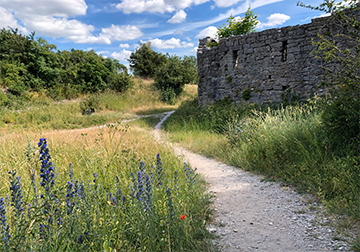
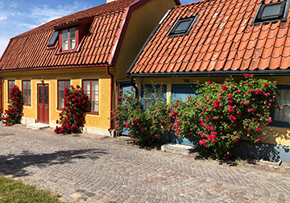
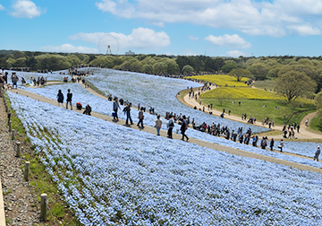
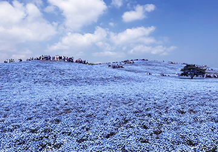
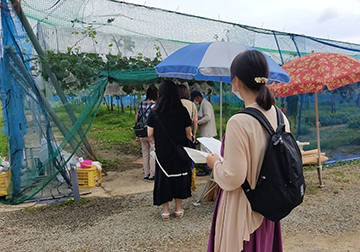
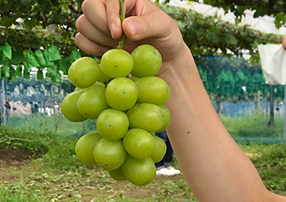
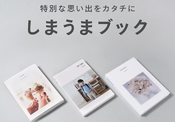

おすすめしたいもの
旅行先
 今まで行った中で一番好きな場所をご紹介。
スウェーデンのゴットランド島にあるビスビュー。 薔薇と廃墟の街と言われています。城壁に囲まれた街で至る所に廃教会があり、中が見学できるようになっています。
石畳みにオレンジ屋根の家が並ぶ景観が可愛らしく、ジブリ映画『魔女の宅急便』のモデルになった街だそうです。
花畑
 茨城県ひたちなか海浜公園。「一度は見てみたい景色」などでよく取り上げられる場所です。
一面のネモフィラ畑は４〜5月がシーズンです。
ぶどう狩り
 先週、三原市の白龍湖観光農園に行ってきました。４０分食べ放題。シャインマスカットがあり、ブドウは全て種無し巨峰。
人が少なかったため密にはなりませんでした。ゴザを貸してくれるので腰を下ろして食べることができ、余すことなくぶどうを満喫することができました！
フォトアルバム（しまうまプリント）
スマホなどの写真からアプリで簡単にフォトアルバムを作成できます。
スマホの写真はあまり見返すことがないので紙面として残したいと思っていた所に出会ったサービスです。
アプリでアルバムレイアウトから注文まで完結。お値段がリーズナブルなのに実物が届いてみたら紙質も発色も良い感じだったのでぜひおすすめしたいです。